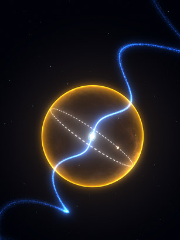

| Feature Article - September 2011 |
| by Do-While Jones |
Pssssst! Buddy! I've got a really big diamond to sell you!
Scientists Discover a Diamond as Big as a Planet |
|---|
 |
| An artist's conception of the pulsar PSR J1719-1438 (bright dot, center) and the Jupiter-mass planet that orbits it (smaller dot, with the orbit traced by a dashed line) |
| Time, August 26, 2011 |
We try to stay away from astronomy nonsense because it is only peripherally related to evolution; but this time, we can justify it.
Cosmology is really just speculation about how the entire universe began and evolved. As such, it includes fanciful ideas about how and when the Earth was formed, which lead to stories about how life began and evolved on Earth. Granted, the supposed evolution of the cosmos is not biological evolution, but they are related.
Cosmology, like biological evolution, is nothing more than philosophy disguised as science. Yes, cosmologists take measurements and make calculations; but then they make lots of assumptions that can't be verified and draw unwarranted conclusions which they expect to be accepted without question.
Somehow, an obscure report in ScienceXpress 1 got the attention of New Scientist, Reuters and Time magazine. They turned it into a sensational story.
|
The fast-spinning star is ... a whirling neutron star whose intense magnetic field generates a beacon of radio waves that sweeps across the universe like the beam of a lighthouse -- in this case, flashing more than 10,000 times every minute. ... astronomers have since found hundreds upon hundreds of pulsars. They've also found that slight variations in the timing of the pulses can be indirect evidence for objects orbiting a pulsar. The gravitational pull of, say, a planet, will make the radio flashes arrive closer together, then farther apart, then closer, in a regularly changing rhythm. In fact, the first planets ever discovered beyond our solar system were found this way in 1992. ... The neutron star's gravity would now be so powerful that the white dwarf star would lose even more layers, leaving behind only its inner core -- about the mass of Jupiter and most likely made largely of oxygen and carbon, two elements that are forged in the nuclear fires at the heart of an aging star. Bailes and his team couldn't actually detect the carbon or oxygen, but given the mass of the "planet" and their understanding of the lifecycle of stars, there's not much else it could be. And because a Jupiter's worth of carbon would have a pretty powerful gravity of its own, it would almost certainly have crushed itself into crystalline form -- in other words, diamond. "We can't uniquely say what percentage of the planet would be diamond," says Bailes, since the details of the process aren't absolutely clear. But it would likely be a lot. 2 |
All they really KNOW for sure is that the radiation coming from the direction of a star has amplitude modulation of about 10,000 times a minute (167 Hz) with slight frequency modulation on it.
They THINK the frequency modulation is due to Doppler shift as the pulsar moves closer and farther from Earth. They THINK the back and forth motion is caused by a planet orbiting it. Given these assumptions they can calculate how heavy a planet would have to be to cause this. Making more unverifiable assumptions about how a planet this heavy might have formed, they GUESS what elements it might be made of.
Astronomers have never actually seen a star--they have seen light from a star. It is a subtle, but important, distinction.
I live in the Mojave Desert, surrounded by distant mountains. On hot days I look at those mountains and see them shimmering. They appear to bounce up and down, and jiggle side to side like Jell-O TM. I know they don't actually move because I have climbed some of them. Hot air rising from the desert floor has less density than cooler air. The speed of light through air varies with density, so light waves are bent as they pass through temperature gradients, making the mountains appear to be in a slightly different place. Wind currents mix the hot air with the hotter air, causing the light to bend differently depending upon where the hotter air happens to be at the moment. This makes the mountains appear to move.
Suppose I had never actually been to those mountains, and didn't know about refraction of light. I would believe those mountains were actually moving. Based on the apparent motion, I could calculate the mass and elasticity of the surrounding mountains. Of course, I would be wrong. But if nobody else had ever actually been to the mountains, and didn't know about refraction, everybody else would believe me and congratulate me for my amazing discovery.
Astronomers can measure the shimmering of the light from stars; but they don't really know what causes it. Maybe there are gas clouds between us and the stars that alter the light as it passes through them. Maybe there is some multi-path interference that causes periodic constructive and destructive interference. There's no way to know.
Chemists and cosmologists are both called scientists; but it is really unfair to classify them together that way.
Chemists are true scientists. They use the scientific method to discover the truth about how elements combine. The professional scientific journals contain articles telling how chemists have discovered how to create new chemical compounds, and what the properties of those compounds are. Sometimes the articles tell about better ways to create known compounds. These articles add to existing knowledge about chemical reactions. You never find articles in the professional scientific literature saying that a process that used to create a chemical compound doesn't work any more. You never read articles saying that "it is believed" that combining certain chemicals in a particular way will cause a certain result. People pay chemists to solve problems. Chemists get paid for discovering chemical reactions that actually work.
Cosmologists are just philosophers who use math to try to convince other people they are right. Virtually every article you read about cosmology contains some claim that what was previously believed is wrong.
Chemists add chapters to the book. Cosmologists rewrite the book. Cosmological thinking doesn't advance knowledge of the truth; it just changes what the truth is claimed to be.
Journalists will say anything to sell magazines. It isn't surprising to see headlines like these in the tabloids.
|
Justin Bieber Crashes Ferrari, Will Survive 3 Justin Bieber Racing In Ferrari Just Before Accident, Claims House Of Pain Member 4 |
You know you can't believe anything in the tabloids, so you ignore it. But wait! CNN said,
|
Justin Bieber crashes his Ferrari 5 |
CNN is supposedly a reputable news source. Maybe it really did happen.
Eventually the truth came out.
|
According to police, a driver in a Honda collided with a Ferrari driven by Bieber. Sources on the scene tell TMZ ... the Honda "tapped" Biebs so gently he didn't exchange info with the other driver. But we're told one of Justin's peeps decided ... better safe than sorry ... and called police -- who showed up and said there wasn't enough damage to even take a report. 6 |
Journalistic exaggeration isn't confined to celebrity gossip. Time magazine's headline was, "Scientists Discover a Diamond as Big as a Planet." 7 It sounds pretty definite, doesn't it?
But what did the astronomers who wrote the article actually say? Here's the abstract of their article:
|
Millisecond pulsars are thought to be neutron stars that have been spun-up by accretion of matter from a binary companion. Although most are in binary systems, some 30% are solitary, and their origin is therefore mysterious. PSR J1719-1438, a 5.7 ms pulsar, was detected in a recent survey with the Parkes 64 m radio telescope. We show that it is in a binary system with an orbital period of 2.2 h. Its companion's mass is near that of Jupiter, but its minimum density of 23 g cm-3 suggests that it may be an ultra-low mass carbon white dwarf. This system may thus have once been an Ultra Compact Low-Mass X-ray Binary, where the companion narrowly avoided complete destruction. 8 |
The article itself consists mainly of equations saying that, if these assumptions are correct, one might make certain conclusions about the size, density, and formation of the "companion mass," and why the "standard model" is wrong.
The article is filled with statements like this one:
|
However, the question still remains: why are some MSPs solitary while others retain white dwarf companions, and some, like PSR J1719-1438 have exotic companions of planetary mass that are possibly carbon rich? We suggest that the ultimate fate of the binary is determined by the mass and orbital period of the donor star at the time of mass transfer. 9 |
The conclusion of the article is,
|
PSR J1719-1438 demonstrates that special circumstances can conspire during binary pulsar evolution that allows neutron star stellar companions to be transformed into exotic planets unlike those likely to be found anywhere else in the Universe. The chemical composition, pressure and dimensions of the companion make it certain to be crystallized (i.e., diamond). 10 |
In other words, the radiation from PSR J1719-1438 doesn't fit with the "standard model." Lots of astronomical measurements don't agree with what the Big Bang (the standard model) predicts. That's why cosmologists postulate things they can't directly measure like dark matter, dark energy, and black holes. They invent things like planet-sized diamonds orbiting stars to explain why the measurements don't match the theory.
The theory of evolution, like cosmology, isn't really science. It's philosophy using scientific terms and measurements to try to appear to be scientific. Somebody finds a bone fragment and builds a theoretical evolutionary tree that contradicts what evolutionists formerly believed, and the new theory replaces the old one, until another bone fragment is found.
The difference between evolution and cosmology is that public school teachers can be a little more honest about cosmology than evolution. A public school science teacher can, if so inclined, point out the inconsistencies in the Big Bang Theory without getting into too much trouble--as long as they don't question the fundamental notion that the universe began with the Big Bang. Lazy science teachers will just read whatever is in the textbook and will not bother to point out that cosmologists no longer believe it. You can't really blame them because the "truth" about cosmology changes every semester. It's too much trouble to keep up with it.
The "truth" about biological evolution changes just as fast; but if a teacher tells students what's really going on in the scientific literature, the teacher will get in trouble for "bringing creationism into the classroom."
Students should question everything they are taught about evolution, cosmology, politics, and economics. (Religion, too; but it isn't taught in public schools.) What do you know to be true, and what do you only think is true? Are the things you think are true really true?
Question what you hear in the news, too. Just because CNN says Justin Bieber crashed his Ferrari doesn't mean it really happened. Just because Time magazine says scientists found a diamond as big as a planet doesn't mean they really did.
| Quick links to | |||
|---|---|---|---|
| Science Against Evolution Home Page |
Back issues of Disclosure (our newsletter) |
Web Site of the Month |
Topical Index |
Footnotes:
1
ScienceXpress, 25 August, 2011, http://www.sciencemag.org/content/early/2011/08/19/science.1208890.full.pdf?sid=40a063e0-c401-45d1-a4d4-36e2bb694a3f
2
Michael Lemonick, Time, Aug. 26, 2011, "Scientists Discover a Diamond as Big as a Planet", http://www.time.com/time/health/article/0,8599,2090471,00.html?xid=newsletter-weekly
3
http://www.thehollywoodgossip.com/2011/08/justin-bieber-crashes-ferrari-will-survive/
4
http://www.radaronline.com/exclusives/2011/08/justin-bieber-accident-racing-ferrari-claims-everlast-house-pain
5
http://www.cnn.com/2011/08/31/showbiz/celebrity-news-gossip/justin-bieber-crashes-ferrari/
6
http://www.antimusic.com/news/11/aug/ts31Justin_Bieber_Involved_in_Ferrari_Accident.shtml
7
Michael Lemonick, Time, Aug. 26, 2011, "Scientists Discover a Diamond as Big as a Planet", http://www.time.com/time/health/article/0,8599,2090471,00.html?xid=newsletter-weekly
8
ScienceXpress, 25 August, 2011, http://www.sciencemag.org/content/early/2011/08/19/science.1208890.full.pdf?sid=40a063e0-c401-45d1-a4d4-36e2bb694a3f
9
ibid.
10
ibid.